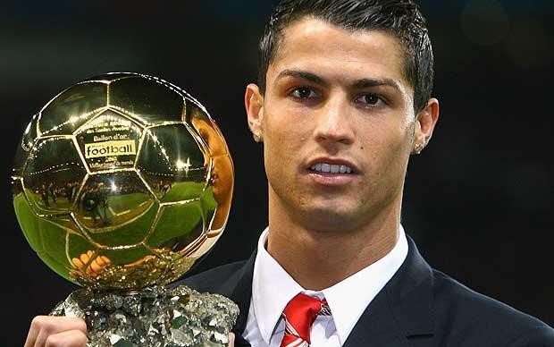

Chương 36

rận chung kết Cúp FA gặp Chelsea là lần cuối cùng Ole Gunnar Solskjaer khoác áo Manchester United. Tháng năm, 2007, Solskjaer một lần nữa lên bàn mổ, nhưng không thể nào chữa lành chấn thương đầu gối. Tháng tám, anh tuyên bố giải nghệ ở tuổi 34, trong sự nuối tiếc của người hâm mộ. Cùng rời Old Trafford với cầu thủ dự bị được yêu thích nhất trong lịch sử United có Gabriel Heinze (chuyển đến Real Madrid[1]) và Alan Smith (sang Newcastle). Để bổ sung lực lượng, Sir Alex mạnh tay bỏ ra gần 50 triệu bảng, mua về tuyển thủ quốc gia Anh Owen Hargreaves và cặp đôi cầu thủ trẻ Nani-Anderson. Ngoài ra, còn có tiền đạo người Argentina Carlos Tevez đến từ West Ham theo hợp đồng cho mượn, và hậu vệ Jonny Evans được đôn lên từ đội trẻ.
Như vậy, Sir Alex đã xây dựng xong hoàng kim thế hệ thứ ba cho United. So với lứa 98-99, thế hệ này có phần trội hơn về sức mạnh hàng thủ. Trong khung gỗ, Edwin Van der Sar tạo sự tin tưởng tuyệt đối với sải tay dài và phản xạ phi thường. Phía trên anh, cặp trung vệ Ferdinand – Vidic mỗi người mỗi vẻ, người này là sự bổ sung hoàn hảo cho người kia. Vidic thì mạnh mẽ, quyết liệt, chuyên về không chiến, Ferdinand tinh tế, mềm mại, giỏi việc bọc lót. Cánh trái có Evra thể lực sung mãn, lên xuống như con thoi. Bên cánh phải, thủ quân Gary Neville sức đã yếu, hay chấn thương, nên ít khi ra sân, nhưng John O’Shea hay Wes Brown đều có thể đá tròn vai. Đá là chưa nói ở các tuyến trên, có nhiều cầu thủ hoạt động rộng hoặc mang xu hướng phòng ngự, thường xuyên lui về hỗ trợ hàng thủ.
Tuy vậy, xét từ giữa sân trở lên, thế hệ mới nói chung không bằng đàn anh. Hàng tiền đạo mùa 2007-2008 khá mỏng, với chỉ ba tiền đạo thực thụ là Rooney, Tevez, và Saha. Rooney và Tevez đá chính thường xuyên, có lối chơi tương tự như nhau: Cùng đá bao sân, không chỉ chuyên ghi bàn mà còn giỏi kiến tạo, thu hồi bóng, tích cực tham gia phòng ngự từ xa. Thế nhưng, mối quan hệ “thần giao cách cảm” như giữa Yorke và Cole là không có. Hàng tiền vệ thì phải thừa nhận là kém hẳn thế hệ 98-99. Tuy Scholes và Giggs còn đó, phong độ họ không còn như xưa; Owen Hargreaves xuất sắc song quá hay chấn thương; Darren Fletcher và Park Ji Sung đá cần cù, chịu khó, có điều chưa được “nhiệt” như Roy Keane, so về độ quái lại càng kém; Michael Carrick thì phập phà phập phù; còn Anderson và Nani chỉ ở dạng triển vọng.
Nhưng còn một người nữa, ta vẫn chưa nhắc đến. Vâng, chính đó là người tạo nên sự khác biệt: Cristiano Ronaldo. Nửa tiền vệ, nửa tiền đạo, Ronaldo như linh hồn của United, tựa đôi cánh giúp Quỷ Đỏ bay cao. Anh là “cặp mắt rồng” của thế hệ 07-08, cũng như Cantona của thế hệ 93-94. Thiếu đi cặp mắt, rồng chỉ là “long tại điền”, không thể nào thăng hoa thành “long tại thiên”.
Ngày 12 tháng tám 2007, United bước vào chiến dịch bảo vệ danh hiệu VĐQG. Bước đầu: không mấy khả quan, hòa 0-0 trên sân nhà trước Reading, Rooney chấn thương. Bước hai: cũng chưa thấy sáng, tiếp tục hòa 1-1 trước Portsmouth, Ronaldo nhận thẻ đỏ. Bước ba: rơi vào vũng bùn, một United thiếu cả Rooney lẫn Ronaldo bị Manchester City đánh bại 1-0. Nhìn vào bảng xếp hạng, thấy Quỷ Đỏ đứng thứ ba…từ dưới đếm lên.
Bên phía Chelsea, tình hình cũng không mấy sáng sủa. Sau chuỗi trận toàn thua và hòa, Abramovich quyết định chấm dứt hợp đồng với "người đặc biệt" Jose Mourinho. Thế mới biết: Có "bố già đường mật" đứng sau lưng chẳng khác nào ngồi dưới lưỡi gươm Damocles[2]: Tha hồ tiêu xài mua sắm thật đấy, nhưng chỉ cần vài trận không đạt liền đi đời ngay. "Thật thất vọng khi từ nay tôi và cậu ta không còn dịp đọ tài", Sir Alex lên tiếng, "Jose như mang đến một luồng gió mới, tươi trẻ, thanh tân; những thành công của cậu ta là không thể phủ nhận."
Trong trận đầu tiên dưới quyền tân HLV Avram Grant, Chelsea xếp giáp quy hàng trước United: thua 0-2 với hai bàn của Tevez và Saha. Thừa thắng xông lên, Quỷ Đỏ lấy lại phong độ vốn có. Cuối tháng chín, Ronaldo lần đầu lập công, giúp đội vượt qua Birmingham. Từ thời điểm ấy, anh không thể...ngừng ghi bàn. Trung bình cứ mỗi trận, Ronaldo làm một hay hai bàn, thỉnh thoảng hứng lên còn làm luôn hattrick.Từ lúc Ronaldo "thông nòng", đội anh thẳng tiến một đường. Hết thủ môn này đến thủ môn khác, hết đội này đến đội khác, bị bộ ba Ronaldo-Rooney-Tevez tra tấn. Newcastle là tội nghiệp nhất: Lượt đi thua 0-6, lượt về thua 1-5; Aston Villa cũng thê thảm: Lần lượt "ôm đầu máu" với các tỷ số 1-4 và 0-4.Tháng ba, 2008, United đá năm trận thắng cả năm, ghi 13 bàn, không để lọt dù chỉ một trái.
Tại Cúp C1, United đứng đầu giữa một bảng khá xương, gồm AS Roma, Sporting Lisbon, và Dynamo Kyiv. Ronaldo nổ súng trong hai lần gặp lại CLB cũ Sporting, đem về chiến thắng 1-0 và 2-1. Không tái lập kỳ tích 7-1, song đội chẳng gặp khó khăn nào trước Roma, nhẹ nhàng thắng ở Old Trafford, và ra về với một điểm tại Olimpico. Dynamo Kyiv đương nhiên bị đè bẹp cả hai lượt.Gặp đối thủ khó chịu Lyon ở vòng hai; trên đất Pháp, Quỷ Đỏ tiếp tục xứng danh vua ghi bàn cuối trận, khi gỡ hòa 1-1 vào phút 87 do công Tevez. Lượt về đá sân nhà, đội thắng khít khao một bàn nhờ công Ronaldo.
Lá thăm có phần ưu đãi United, khiến đội gặp lại...Roma ở tứ kết. Từ sau trận cầu khủng khiếp mùa trước, hễ tái ngộ đối phương là các chàng trai Ý "cóng giò". Đấu bảng đã cóng, tứ kết càng cóng hơn, Roma một lần nữa bó tay, thua với tổng tỷ số 0-3. Tuy nhiên, đón chờ Quỷ Đỏ tại lượt tiếp theo là một đại gia thực thụ: Barcelona. CLB xứ Catalonia không còn là "đội bóng một người" như cái cách họ phụ thuộc vào Rivaldo năm 1999. Giờ đây, HLV Frank Rijkaard nắm trong tay một tập thể cực mạnh, gắn bó, sở hữu lối chơi đầy nghệ thuật, với những đường chuyền ban ngắn, phối hợp nhỏ, đập nhả, đan xen.Xavi, Iniesta, Deco, và đặc biệt, cậu bé thiên tài người Argentina Lionel Messi đều là những nghệ sỹ sân cỏ. Có thể nói Barca hiện tại là một "Dream Team" thế hệ hai, không hề thua sút đội bóng trong mơ của Johan Cruyff trước đây.
Đối mặt đại địch, Sir Alex chủ trương "thắng trước hết là không thua", ông đưa ra sơ đồ chú trọng phòng ngự, sử dụng đến hai tiền vệ chuyên đánh chặn là Carrick và Scholes. Trận đầu tiên tại Camp Nou, mặc cho Barcelona chiếm giữ thế trận, United phong tỏa thành công các mũi nhọn của đối phương, bảo vệ được tỷ số 0-0. Thậm chí, nếu Ronaldo không sút hỏng phạt đền, đội đã thắng ngay trên đất khách. Lượt về ở Old Trafford, thế trận vẫn không đổi: United phòng thủ chặt chẽ, Barcelona tấn công vô vọng. Khác biệt duy nhất đến từ bàn thắng của Paul Scholes: Một cú sút xa căng như kẻ chỉ, đưa bóng bay vào góc chết khung thành. Thời sung sức, mỗi năm Scholes có đến năm sáu bàn như thế, song ở tuổi 34 xế chiều, cú sút ấy là một sự xuất thần.
Hai trận gặp Barca là thí dụ tiêu biểu cho thấy sự khác biệt trong lối chơi giữa thế hệ 07-08 và 98-99. Lứa trước đá tốc độ nhanh, tấn công dồn dập, cuồn cuộn; lứa sau thận trọng, chủ trương chậm mà chắc. Đó đều do tính toán của Sir Alex. Trên đời có hai loại HLV: Loại thứ nhất chỉ có một bài, đi đến đâu cũng dùng bài ấy, như Marcelo Bielsa, huấn luyện đội nào cũng xua quân cắm đầu tấn công ; loại thứ hai biết cách thích nghi, tùy cơ ứng biến, như Sir Alex. Lứa 98-99 tấn công vũ bão là do có những nhân sự thích hợp, đàn em 07-08 nếu muốn đá như thế phải cần thêm ít nhất một...Ronaldo, chứ không thể yêu cầu Fletcher hay Carrick chơi như "hành vân lưu thủy".Sir tuy già đi nhưng không cố chấp: Mỗi thời mỗi khác, cần có sự thay đổi, miễn sao vẫn đem về danh hiệu, tức là thành công.
Tháng năm về, cũng là lúc cuộc đua giữa Manchester United và Chelsea bước vào giai đoạn cuối. Hai kỳ phùng địch thủ cùng vào chung kết Cúp C1, và đang so kè quyết liệt ở giải VĐQG. Ngoại hạng Anh năm nay còn gay cấn hơn năm 1999: Trước vòng đấu cuối cùng, United và Chelsea bằng điểm nhau. Vì có hiệu số hơn hẳn (+53 so với +37), Quỷ Đỏ sẽ đăng quang nếu qua mặt Wigan, không cần biết đến kết quả trận Chelsea-Bolton. Dưới sự dẫn dắt của Steve Bruce, Wigan thi đấu kiên cường, có điều "áo mặc sao qua khỏi đầu". United vẫn hoàn thành nhiệm vụ với hai bàn thắng của Ronaldo và Ryan Giggs.
Trận gặp Wigan mang ý nghĩa vô cùng quan trọng với Giggs,người duy nhất góp mặt trong cả ba hoàng kim thế hệ của Sir Alex: Anh cân bằng kỷ lục 758 trận khoác áo United của Sir Bobby Charlton, cùng lúc đó trở thành cầu thủ đầu tiên giành được 10 chức VĐQG Anh. "Còn có thể đòi hỏi gì hơn nữa?", Giggs hồ hởi, "Ngày khởi nghiệp, tôi có mơ cũng không tưởng tượng được ngày nay!"
Chung kết Cúp C1 tại Moscow, United ra quân với đội hình gồm: Van der Sar, Brown, Vidic, Ferdinand, Evra, Hargreaves, Scholes, Carrick, Ronaldo, Rooney, và Tevez. Trận này không có "hai phút thần kỳ" như chín năm về trước, nhưng kịch tích theo một kiểu khác. Phút 26, Wes Brown tạt bóng, Ronaldo đánh đầu dũng mãnh, đưa United vượt lên. Chelsea gỡ hòa vào phút cuối hiệp một, trong một tình huống có phần may mắn: Cú sút của Michael Essien bật trúng cả Ferdinand lẫn Vidic, làm Van der Sar mất đà, tạo cơ hội cho Frank Lampard dễ dàng dứt điểm. Suốt hiệp hai và 30 phút hiệp phụ, không bàn thắng nào được ghi thêm. Drogba sút trúng cột dọc, Lampard đưa bóng vào xà ngang, bỏ lỡ cơ hội cho Chelsea. Bên phía United, pha dứt điểm của Ryan Giggs, vào sân thay Scholes, bị John Terry chặn lại trên vạch vôi. Phút 116, Drogba bị đuổi khỏi sân, song bốn phút còn lại quá ít ỏi để United tận dụng lợi thế hơn người.
Bước vào loạt luân lưu định mệnh, không khí trên sân căng như dây đàn. Người hùng Ronaldo khiến tất cả bàng hoàng khi sút bóng vào tay Petr Cech. Cả bốn lượt sút của Chelsea đều thành công, đội quân xanh sẽ lên ngôi nếu thủ quân John Terry đá thành công quả cuối cùng.
Terry từ từ bước vào vòng cấm địa, đưa tay chỉnh lại băng đội trưởng, đặt bóng xuống, rồi chạy lấy đà. Có lẽ hàng triệu fan hâm mộ Quỷ Đỏ đang cầm sẵn remote control, chỉ chờ bóng vào lưới sẽ tắt phụt TV. Nhưng không! Terry trượt chân, và cú sút của anh bật vào cột dọc. Cuộc chơi vẫn tiếp tục.
Ryan Giggs đã đá thành công quả phạt đền thứ bảy. Sức ép đè nặng lên Nicolas Anelka. Anelka không muốn thực hiện penalty, song đã đến lượt mình, không thể từ chối. Anh đưa bóng vào góc trái, mạnh nhưng chưa đủ hiểm. Van der Sar bay người cản phá thành công.Tất cả là định mệnh! Nếu Drogba, chuyên gia sút phạt đền của Chelsea còn trên sân, mọi chuyện có thể đã khác!
Có gì tàn nhẫn hơn những cú luân lưu may rủi? Niềm vui tột cùng của người này là nỗi buồn tê tái của kẻ khác. John Terry mắt đỏ ngầu, đổ sụp xuống sân. Gary Neville chạy đến, an ủi đối thủ, sau đó mới trở về ăn mừng cùng đồng đội: Một hành động đẹp, thể hiện tinh thần thượng võ chân chính.
Vậy là, trong dịp kỷ niệm 50 năm thảm họa Munich, Manchester United lần thứ ba lên ngôi vô địch châu Âu. Tuy Ronaldo đá hỏng phạt đền, không ai có thể phủ nhận đóng góp to lớn của anh. Ghi đến 42 bàn trên các mặt trận[3], Ronaldo thâu tóm tất cả phần thưởng cá nhân: Cầu Thủ Xuất Sắc Nhất Nước Anh (FWA và PFA), Vua Phá Lưới Ngoại Hạng, Chiếc Giày Vàng Châu Âu, Quả Bóng Vàng Châu Âu, và Cầu Thủ Xuất Sắc Nhất Thế Giới của FIFA. Anh là cầu thủ đầu tiên của United giành Quả Bóng Vàng kể từ George Best năm 1968. Trước anh, chưa từng có Quỷ Đỏ nào giành Chiếc Giày Vàng hay danh hiệu Cầu Thủ Xuất Sắc của FIFA. Ngày Ronaldo đến Old Trafford, người ta nghi ngờ, không biết anh kế thừa nổi chiếc áo số bảy của Cantona và Beckham hay không. Câu trả lời nay đã rõ giữa thanh thiên bạch nhật.
Ngày Ronaldo tính sang Tây Ban Nha, Sir Alex có nói một câu "Hãy ở lại! Thầy sẽ dùng con làm hạt nhân, xây dựng đội hình chung quanh con". Ông đã thực hiện lời hứa ấy. Để hình dung tầm quan trọng của Ronaldo đối với United trong mùa 2007-2008, hãy nhìn vào tổng số bàn thắng của đội bóng: Một mình Ronaldo đứng chót vót trên cao với 42 bàn, xa xa phía dưới là Tevez (19) và Rooney (18). Người ghi bàn nhiều thứ tư là Saha chỉ có...năm lần lập công. Các tiền vệ Quỷ Đỏ không ai có quá bốn bàn, chẳng như ngày xưa: Những Scholes, Giggs, Beckham, Kanchelskis, Sharpe thường xuyên ghi hơn 10 trái mỗi mùa.
Trong men say chiến thắng, Sir Alex lại nghĩ về việc dưỡng già. "Tôi không ở lại đây đến năm 70 đâu", ông nói, "Cùng lắm là ba năm nữa thôi. Phải nghĩ về bản thân mình chứ, và nghĩ về vợ nữa. Bà nhà tôi năm nay già rồi, tôi cần quan tâm bà ấy hơn."
Thế nhưng, Sir thòng thêm một câu: "Vấn đề là nghỉ hưu rồi thì sao? Rất nhiều người hưu trí xong, liền vào hòm sớm. Có những công việc là lẽ sống của ta. Mất đi lẽ sống, chẳng còn lại gì."

Ronaldo giành Quả Bóng Vàng Châu Âu (ảnh: Telegraph.co.uk)
[1] Theo một số nguồn tin, việc mua Heinze nằm trong kế hoạch chiêu mộ Ronaldo của Real Madrid. Biết Heinze là bạn thân nhất của Ronaldo ở Old Trafford, Real đem hậu vệ này về, hòng dùng anh gây tác động đến tiền vệ người Bồ.
[2]Tích cổ Hy Lạp: Damocles ao ước được làm vua, nhưng nhìn lên phía trên ngai vàng, thấy lủng lẳng thanh gươm sắc nhọn, chỉ được treo một cách lỏng lẻo bằng cọng lông đuôi ngựa. Từ ấy, anh ta tỉnh ngộ, không mơ mộng phù hoa nữa.
[3]Ít hơn hai bàn so với Van Nistelrooy mùa 2002-2003, nhưng cần nhớ Ronaldo không phải trung phong thực thụ.